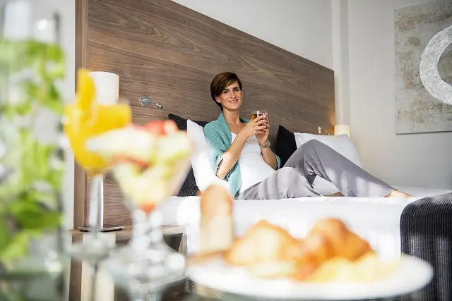
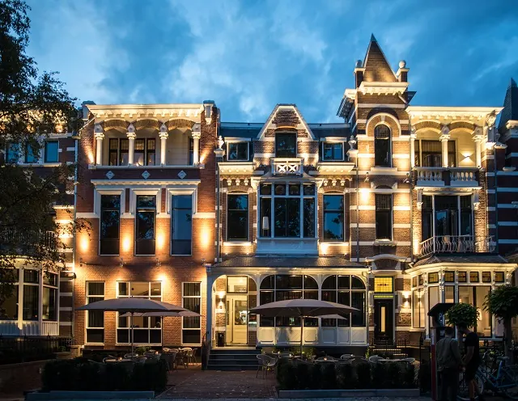
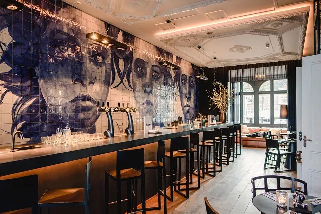
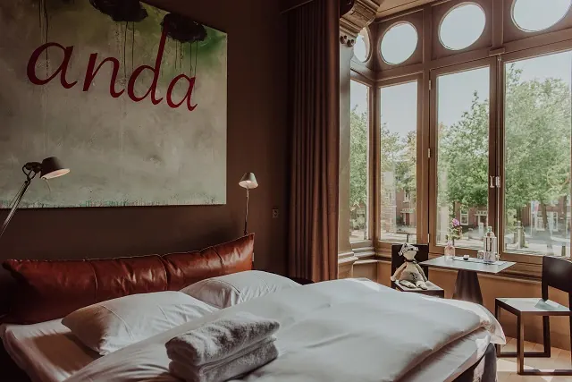
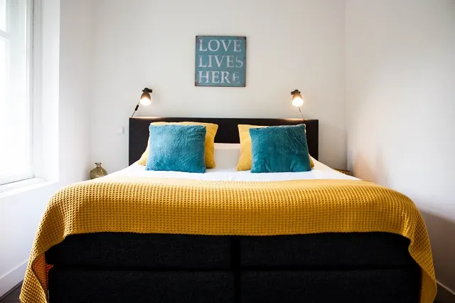
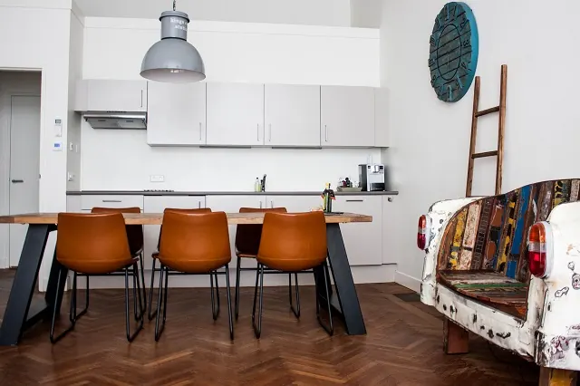
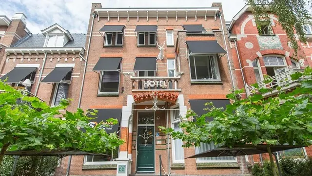
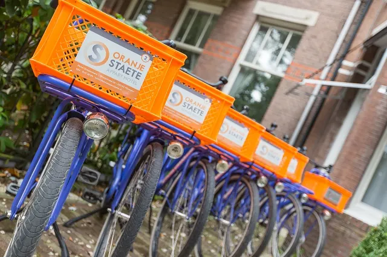

Weekendje Nijmegen? Hier Kun je Leuk Overnachten
Gepubliceerd op 24 januari 2023, bijgewerkt op 8 november 2023
Onderdeel van de gids Overnachten in Nijmegen en Nijmeegse Vierdaagse

Staat een weekendje weg in Nijmegen ook op jouw bucketlist? Dan ben je zeker niet de enige. Veel toeristen vanuit binnen- en buitenland reizen af om het prachtige Nijmegen te ontdekken. Tijdens een weekendje Nijmegen wens jij uiteraard te overnachten op de allerbeste plek. Dicht bij het centrum of juist in de vrije natuur? Ieders ideale plek ziet er anders uit. Wij hebben diverse mogelijkheden tot overnachten in Nijmegen onder de loep genomen.
Gasten die op zoek zijn naar een luxe verblijfplaats, zullen waarschijnlijk kiezen voor één van de velen hotels die Nijmegen rijk is. Sanadome Hotel & Spa is een populaire optie. Gasten die wellicht iets minder te besteden hebben, kunnen terecht in een charmante Bed&Breakfast of prachtige AirBnB.
Ben jij op zoek naar een ideale plek om te overnachten tijdens jouw verblijf in Nijmegen? Dan ben je bij ons aan het juiste adres. In het onderstaande artikel bespreken we de verschillende mogelijkheden. Een hotel, B&B of toch liever een AirBnB? De keuze is aan jou. Het is aan ons om jou te voorzien van alle voor- en nadelen. We raden bovendien enkele plekjes aan die naar onze mening absoluut het overwegen waard zijn.
Overnachten in een hotel te Nijmegen
Nijmegen is een prachtige stad om te bezoeken. De oude gebouwen, bourgondische horecagelegenheden en het fantastische winkelgebied, zijn grote toeristische trekpleisters. Nijmegen is een historische en zeer sfeervolle stad. Dit zie je ook direct terug in de vele hotels die Nijmegen rijk is.
Houd jij van luxe en wil je heerlijk verzorgd worden tijdens jouw verblijf? Dan zal jij hoogstwaarschijnlijk willen overnachten in een hotel. Je bed wordt hier immers opgemaakt, je handdoeken worden gewassen, en in de ochtend staat er vaak een heerlijk ontbijtje voor je klaar. Aan al deze luxe zit natuurlijk ook een prijskaartje. Het nadeel van overnachten in een hotel is dan ook de aanzienlijk hogere prijs per nacht. Wist je trouwens dat er vele restaurants in Nijmegen zijn waar je heerlijk een hapje kan eten? In Nijmegen zijn er veel verschillende hotels te vinden. Onderstaand enkele hotels ter inspiratie.
– Sanadome Hotel & Spa
Het Sanadome hotel in Nijmegen is gelegen in een rustige omgeving. Toch zijn de belangrijkste bezienswaardigheden niet ver weg. Dit unieke 4-sterrenhotel is van alle gemakken voorzien. Het hotel heeft enorm veel luxe te bieden. Zo is er ook een volledig spacentrum te vinden waar gasten gratis toegang tot hebben. Houd jij dus wel van luxe? Overnacht dan bij Sanadome Hotel & Spa te Nijmegen.

– Blue Hotel
Het Blue hotel is interessant voor gasten die graag in hartje Nijmegen overnachten. Dit charmante boetiekhotel is namelijk gevestigd in het bruisende centrum. Het 19e-eeuwse pand heeft veel van zijn authentieke details behouden. Het hotel is dan ook een lust voor het oog. Wil jij de sfeer van deze unieke stad ook in je hotel ervaren? Dan kies je voor deze sfeervolle logeerplek in het centrum van Nijmegen.



– Hotel Oranjestaete
Oranjestaete is een modern hotel in het centrum van Nijmegen. Het ligt op steenworp afstand van diverse populaire bezienswaardigheden. Het hotel is betaalbaar en bovendien voorzien van de allerbeste reviews. Gasten zijn zeer te spreken over de hygiëne, locatie, service en prijskwaliteit verhouding.




Overnachten in een Bed & Breakfast te Nijmegen
Een doorgaans iets goedkopere optie dan het overnachten in een hotel, is het verblijven in een Bed & Breakfast. De inrichting van een B&B heeft vaak een persoonlijke touch en ook de service sluit hierop aan. Het overnachten in een B&B is ideaal voor gasten die de authentieke sfeer van Nijmegen wensen te ervaren.
Een echte aanrader in Nijmegen is Opoe Sientje B&B. Het betreft een historisch schip dat is omgetoverd tot charmante B&B. Het schip stamt uit 1885, en heeft volgens veel gasten ook wel iets weg van een drijvend museum. Een verblijf aan boord is in ieder geval een unieke kans om kennis te maken met de geschiedenis van Nijmegen. De inrichting van dit unieke verblijf maakt de beleving pas echt compleet. Van origineel houtwerk tot een koperen badkuip, Opoe Sientje verrast iedere gast met een unieke sfeerbeleving.
Op zoek naar B&B Inspiratie? Klik dan hierAirBnB in Nijmegen
Ook het verblijf in een AirBnB behoort tot de mogelijkheden wanneer je een trip naar Nijmegen boekt. Het overnachten in Nijmegen in een AirBnB is vaak goedkoper, en brengt bovendien nog veel andere voordelen met zich mee. Zo heb je om te beginnen je eigen plek, en zul je dus geen last hebben van eventuele andere gasten. Je kunt in een AirBnB vaak koken en wassen, wat ook weer een hoop geld kan besparen. Er zijn veel verschillende AirBnB’s te vinden in Nijmegen en omstreken. Van moderne studio in het centrum van Nijmegen tot rustige chalet in de nabijgelegen natuur, er zit zonder twijfel ook voor jou een ideale accommodatie tussen.
Zoek jij een plek waar je compleet tot rust kan komen, zonder dat het een rib uit je lijf is? Kies dan voor een AirBnB in Nijmegen.
5x AIRBNB in NijmegenBed and breakfasts in Nijmegen
Zin om te beginnen? In onze bedrijvengids vind je alle 13 B&B's in Nijmegen, met openingstijden, kenmerken en een kaart.
Bekijk alle 13 B&B's in Nijmegen
Heb je zelf een b&b? Laat je hier uitlichten.